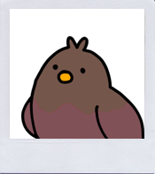
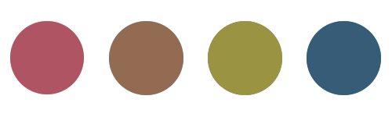
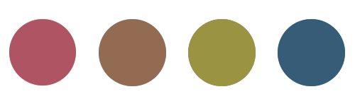

내추럴한 가을 뮤트
#크림 라떼
#제니
#골드 악세사리

자세한 결과
가을 뮤튼느 스트롱톤보다는 더 부드러운 중간 밝기, 중간 채도의 색상이 더 잘 어울리는 타입이에요.
부드럽고 은은한 이미지로 크림라떼가 떠오르고 내추럴한 메이크업이 잘 어울려요.말린 장미색인 MLBB색이 어울리고
누드한 갈색 립스틱이 잘 어울려요.골드색 계열의 악세사리와 쉬머펄로 분위기를 더욱 살릴 수 있어요.
부드럽고 은은한 이미지로 크림라떼가 떠오르고 내추럴한 메이크업이 잘 어울려요.말린 장미색인 MLBB색이 어울리고
누드한 갈색 립스틱이 잘 어울려요.골드색 계열의 악세사리와 쉬머펄로 분위기를 더욱 살릴 수 있어요.
나와 어울리는 컬러는?


대표적인 연예인
제니 박신혜 한효주